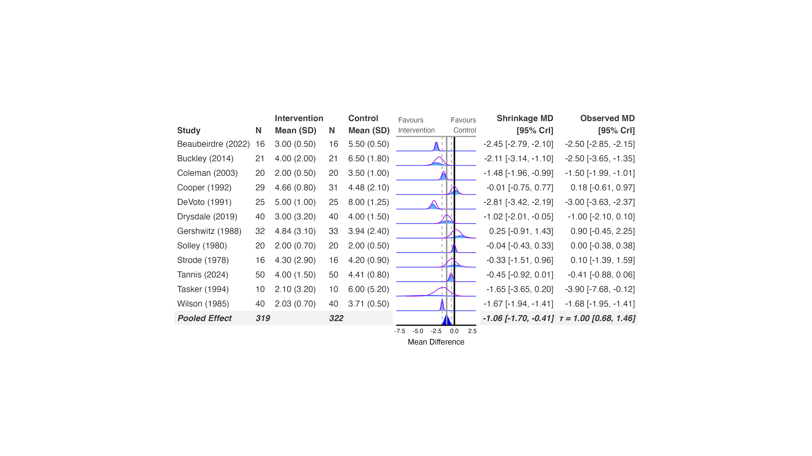

library(bayesma)
library(bayesfoRest)
model_bayesma <- bayesma(
data = cont_outcome,
measure = "MD",
model_type = "random_effect",
studyvar = Author,
yearvar = Year,
mean_ctrl = Mean_Control,
mean_int = Mean_Intervention,
sd_ctrl = SD_Control,
sd_int = SD_Intervention,
n_ctrl = N_Control,
n_int = N_Intervention)bayesma is a sister package in this same family, fitting meta-analysis models via cmdstanr with a design that goes further than the other backends in one respect: beyond plain random/common-effect models, it has built-in publication-bias-adjustment model types ("pet_peese", "bc_verde", "bc_jung", "copas", "selection", "mixture", "outlier") that fit directly through bayesma() itself, rather than needing a separate RoBMA-style ensemble. Subgroup analyses and funnel plots work the same way as the other backends.
Fit the model
bayesma uses the same tidy-evaluation calling convention as bayes_forest() – bare column names, not strings – and fits directly from the arm-level data, no metafor::escalc() step needed:
measure accepts "OR", "RR", "IRR", "MD", and "SMD", and determines which arguments are required – mean_ctrl/mean_int/ sd_ctrl/sd_int for "MD"/"SMD", event_ctrl/event_int for "OR"/"RR"/"IRR". mu_prior/tau_prior take Stan prior expressions directly (e.g. "normal(0, 1)"), rather than the bf_*() constructors the other backends use.
Create the forest plot
bayes_forest(
model = model_bayesma,
data = cont_outcome,
measure = "MD",
studyvar = Author,
yearvar = Year,
mean_ctrl = Mean_Control,
mean_int = Mean_Intervention,
sd_ctrl = SD_Control,
sd_int = SD_Intervention,
n_ctrl = N_Control,
n_int = N_Intervention,
xlim = c(-8, 3)
)

Subgroup analysis
subgroup = TRUE, subgroupvar = Subgroup refits bayesma per subgroup automatically, the same way it does for brms, bayesmeta, MetaStan, and RoBMA.
No bf_*() prior-sensitivity refit
bayesma doesn’t have a sensitivity_plot()/ecdf_model_plot() refit method – its priors are plain Stan expression strings rather than the single-distribution bf_*() objects those functions refit under, so passing a bayesma model as the base model there will error. If you want prior or model-type sensitivity for a bayesma analysis, compare fits directly: refit bayesma() under each prior/model_type you want to compare and build the comparison yourself, or fit your primary model with one of the other backends and use bayesma for its publication-bias-adjustment model types specifically.